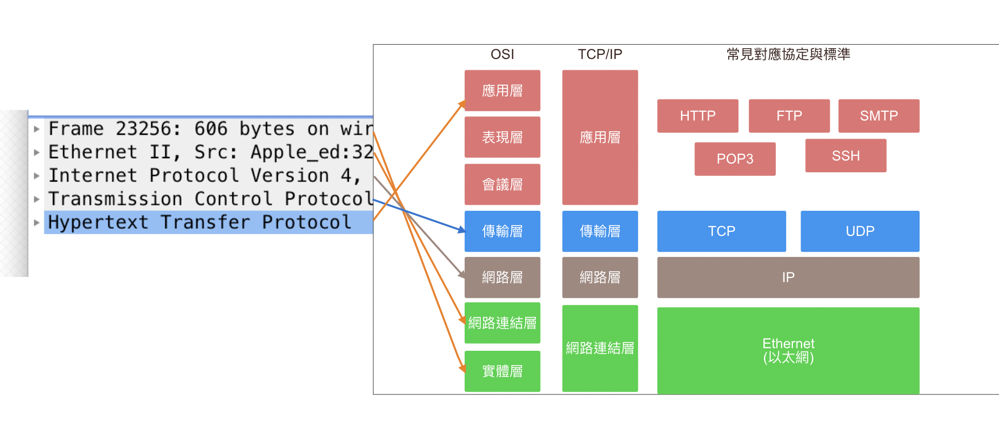

<!DOCTYPE html><html lang="zh-TW"><head><meta charset="UTF-8"><meta name="viewport" content="width=device-width,initial-scale=1,maximum-scale=2"><meta name="theme-color" content="#222"><meta name="generator" content="Hexo 5.4.0"><link rel="apple-touch-icon" sizes="180x180" href="/images/apple-touch-icon-next.png"><link rel="icon" type="image/png" sizes="32x32" href="/images/favicon-32x32-next.png"><link rel="icon" type="image/png" sizes="16x16" href="/images/favicon-16x16-next.png"><link rel="mask-icon" href="/images/logo.svg" color="#222"><link rel="stylesheet" href="/css/main.css"><link rel="stylesheet" href="https://cdn.jsdelivr.net/npm/@fortawesome/fontawesome-free@5.15.3/css/all.min.css" integrity="sha256-2H3fkXt6FEmrReK448mDVGKb3WW2ZZw35gI7vqHOE4Y=" crossorigin="anonymous"><link rel="stylesheet" href="https://cdn.jsdelivr.net/npm/animate.css@3.1.1/animate.min.css" integrity="sha256-PR7ttpcvz8qrF57fur/yAx1qXMFJeJFiA6pSzWi0OIE=" crossorigin="anonymous"><script class="next-config" data-name="main" type="application/json">{&quot;hostname&quot;:&quot;yangtsungjen.github.io&quot;,&quot;root&quot;:&quot;&#x2F;&quot;,&quot;images&quot;:&quot;&#x2F;images&quot;,&quot;scheme&quot;:&quot;Pisces&quot;,&quot;version&quot;:&quot;8.5.0&quot;,&quot;exturl&quot;:false,&quot;sidebar&quot;:{&quot;position&quot;:&quot;left&quot;,&quot;display&quot;:&quot;post&quot;,&quot;padding&quot;:18,&quot;offset&quot;:12},&quot;copycode&quot;:true,&quot;bookmark&quot;:{&quot;enable&quot;:true,&quot;color&quot;:&quot;#222&quot;,&quot;save&quot;:&quot;auto&quot;},&quot;fancybox&quot;:false,&quot;mediumzoom&quot;:false,&quot;lazyload&quot;:false,&quot;pangu&quot;:false,&quot;comments&quot;:{&quot;style&quot;:&quot;tabs&quot;,&quot;active&quot;:null,&quot;storage&quot;:true,&quot;lazyload&quot;:false,&quot;nav&quot;:null},&quot;motion&quot;:{&quot;enable&quot;:true,&quot;async&quot;:false,&quot;transition&quot;:{&quot;post_block&quot;:&quot;fadeIn&quot;,&quot;post_header&quot;:&quot;fadeInDown&quot;,&quot;post_body&quot;:&quot;fadeInDown&quot;,&quot;coll_header&quot;:&quot;fadeInLeft&quot;,&quot;sidebar&quot;:&quot;fadeInUp&quot;}},&quot;prism&quot;:false,&quot;i18n&quot;:{&quot;placeholder&quot;:&quot;搜尋...&quot;,&quot;empty&quot;:&quot;我們無法找到任何有關 ${query} 的搜索結果&quot;,&quot;hits_time&quot;:&quot;${hits} 找到 ${time} 個結果&quot;,&quot;hits&quot;:&quot;找到 ${hits} 個結果&quot;}}</script><script src="/js/config.js"></script><meta name="description" content="Wireshark（監聽封包） 我們可以透過 wireshark 來查看網頁傳輸的過程，過程中到底經過了哪些事情？ Wireshark 常見指令 尋找來源 IP：ip.src&#x3D;&#x3D; xxx.xxx.xxx.xxx 或 ( or )：ip.src&#x3D;&#x3D; xx.xx.xx.xx or ip.dst &#x3D;&#x3D; xx.xx.xx.xx port： tcp.port &#x3D;&#x3D; 80 網路請求：http.request."><meta property="og:type" content="article"><meta property="og:title" content="從Wireshark深入了解網路請求"><meta property="og:url" content="https://yangtsungjen.github.io/2021/06/22/%E7%B6%B2%E8%B7%AF%E5%9F%BA%E7%A4%8E%E7%90%86%E8%AB%96/%E5%BE%9EWireshark%E6%B7%B1%E5%85%A5%E4%BA%86%E8%A7%A3%E7%B6%B2%E8%B7%AF%E8%AB%8B%E6%B1%82/index.html"><meta property="og:site_name" content="洋蔥的筆記札本"><meta property="og:description" content="Wireshark（監聽封包） 我們可以透過 wireshark 來查看網頁傳輸的過程，過程中到底經過了哪些事情？ Wireshark 常見指令 尋找來源 IP：ip.src&#x3D;&#x3D; xxx.xxx.xxx.xxx 或 ( or )：ip.src&#x3D;&#x3D; xx.xx.xx.xx or ip.dst &#x3D;&#x3D; xx.xx.xx.xx port： tcp.port &#x3D;&#x3D; 80 網路請求：http.request."><meta property="og:locale" content="zh_TW"><meta property="og:image" content="https://yangtsungjen.github.io/2021/06/22/%E7%B6%B2%E8%B7%AF%E5%9F%BA%E7%A4%8E%E7%90%86%E8%AB%96/%E5%BE%9EWireshark%E6%B7%B1%E5%85%A5%E4%BA%86%E8%A7%A3%E7%B6%B2%E8%B7%AF%E8%AB%8B%E6%B1%82/frame.png"><meta property="og:image" content="https://yangtsungjen.github.io/2021/06/22/%E7%B6%B2%E8%B7%AF%E5%9F%BA%E7%A4%8E%E7%90%86%E8%AB%96/%E5%BE%9EWireshark%E6%B7%B1%E5%85%A5%E4%BA%86%E8%A7%A3%E7%B6%B2%E8%B7%AF%E8%AB%8B%E6%B1%82/tcp.png"><meta property="og:image" content="https://yangtsungjen.github.io/2021/06/22/%E7%B6%B2%E8%B7%AF%E5%9F%BA%E7%A4%8E%E7%90%86%E8%AB%96/%E5%BE%9EWireshark%E6%B7%B1%E5%85%A5%E4%BA%86%E8%A7%A3%E7%B6%B2%E8%B7%AF%E8%AB%8B%E6%B1%82/001.png"><meta property="og:image" content="https://yangtsungjen.github.io/2021/06/22/%E7%B6%B2%E8%B7%AF%E5%9F%BA%E7%A4%8E%E7%90%86%E8%AB%96/%E5%BE%9EWireshark%E6%B7%B1%E5%85%A5%E4%BA%86%E8%A7%A3%E7%B6%B2%E8%B7%AF%E8%AB%8B%E6%B1%82/TCP_header.png"><meta property="og:image" content="https://yangtsungjen.github.io/2021/06/22/%E7%B6%B2%E8%B7%AF%E5%9F%BA%E7%A4%8E%E7%90%86%E8%AB%96/%E5%BE%9EWireshark%E6%B7%B1%E5%85%A5%E4%BA%86%E8%A7%A3%E7%B6%B2%E8%B7%AF%E8%AB%8B%E6%B1%82/udp.png"><meta property="og:image" content="https://yangtsungjen.github.io/2021/06/22/%E7%B6%B2%E8%B7%AF%E5%9F%BA%E7%A4%8E%E7%90%86%E8%AB%96/%E5%BE%9EWireshark%E6%B7%B1%E5%85%A5%E4%BA%86%E8%A7%A3%E7%B6%B2%E8%B7%AF%E8%AB%8B%E6%B1%82/https.png"><meta property="article:published_time" content="2021-06-22T03:20:35.000Z"><meta property="article:modified_time" content="2021-06-22T09:38:56.581Z"><meta property="article:author" content="洋蔥"><meta property="article:tag" content="網路基礎理論"><meta name="twitter:card" content="summary"><meta name="twitter:image" content="https://yangtsungjen.github.io/2021/06/22/%E7%B6%B2%E8%B7%AF%E5%9F%BA%E7%A4%8E%E7%90%86%E8%AB%96/%E5%BE%9EWireshark%E6%B7%B1%E5%85%A5%E4%BA%86%E8%A7%A3%E7%B6%B2%E8%B7%AF%E8%AB%8B%E6%B1%82/frame.png"><link rel="canonical" href="https://yangtsungjen.github.io/2021/06/22/%E7%B6%B2%E8%B7%AF%E5%9F%BA%E7%A4%8E%E7%90%86%E8%AB%96/%E5%BE%9EWireshark%E6%B7%B1%E5%85%A5%E4%BA%86%E8%A7%A3%E7%B6%B2%E8%B7%AF%E8%AB%8B%E6%B1%82/"><script class="next-config" data-name="page" type="application/json">{&quot;sidebar&quot;:&quot;&quot;,&quot;isHome&quot;:false,&quot;isPost&quot;:true,&quot;lang&quot;:&quot;zh-TW&quot;,&quot;comments&quot;:true,&quot;permalink&quot;:&quot;https:&#x2F;&#x2F;yangtsungjen.github.io&#x2F;2021&#x2F;06&#x2F;22&#x2F;%E7%B6%B2%E8%B7%AF%E5%9F%BA%E7%A4%8E%E7%90%86%E8%AB%96&#x2F;%E5%BE%9EWireshark%E6%B7%B1%E5%85%A5%E4%BA%86%E8%A7%A3%E7%B6%B2%E8%B7%AF%E8%AB%8B%E6%B1%82&#x2F;&quot;,&quot;path&quot;:&quot;2021&#x2F;06&#x2F;22&#x2F;網路基礎理論&#x2F;從Wireshark深入了解網路請求&#x2F;&quot;,&quot;title&quot;:&quot;從Wireshark深入了解網路請求&quot;}</script><script class="next-config" data-name="calendar" type="application/json">&quot;&quot;</script><title>從Wireshark深入了解網路請求 | 洋蔥的筆記札本</title><noscript><link rel="stylesheet" href="/css/noscript.css"></noscript></head><body itemscope itemtype="http://schema.org/WebPage" class="use-motion"><div class="headband"></div><main class="main"><header class="header" itemscope itemtype="http://schema.org/WPHeader"><div class="header-inner"><div class="site-brand-container"><div class="site-nav-toggle"><div class="toggle" aria-label="切換導航欄" role="button"><span class="toggle-line"></span> <span class="toggle-line"></span> <span class="toggle-line"></span></div></div><div class="site-meta"><a href="/" class="brand" rel="start"><i class="logo-line"></i><h1 class="site-title">洋蔥的筆記札本</h1><i class="logo-line"></i></a><p class="site-subtitle" itemprop="description">往前邁進</p></div><div class="site-nav-right"><div class="toggle popup-trigger"></div></div></div><nav class="site-nav"><ul class="main-menu menu"><li class="menu-item menu-item-home"><a href="/" rel="section"><i class="fa fa-home fa-fw"></i>首頁</a></li><li class="menu-item menu-item-about"><a href="/about/" rel="section"><i class="fa fa-user fa-fw"></i>關於</a></li><li class="menu-item menu-item-tags"><a href="/tags/" rel="section"><i class="fa fa-tags fa-fw"></i>標籤</a></li><li class="menu-item menu-item-categories"><a href="/categories/" rel="section"><i class="fa fa-th fa-fw"></i>分類</a></li><li class="menu-item menu-item-archives"><a href="/archives/" rel="section"><i class="fa fa-archive fa-fw"></i>歸檔</a></li></ul></nav></div><div class="toggle sidebar-toggle" role="button"><span class="toggle-line"></span> <span class="toggle-line"></span> <span class="toggle-line"></span></div><aside class="sidebar"><div class="sidebar-inner sidebar-nav-active sidebar-toc-active"><ul class="sidebar-nav"><li class="sidebar-nav-toc">文章目錄</li><li class="sidebar-nav-overview">本站概要</li></ul><div class="sidebar-panel-container"><div class="post-toc-wrap sidebar-panel"><div class="post-toc animated"><ol class="nav"><li class="nav-item nav-level-2"><a class="nav-link" href="#Wireshark%EF%BC%88%E7%9B%A3%E8%81%BD%E5%B0%81%E5%8C%85%EF%BC%89"><span class="nav-number">1.</span> <span class="nav-text">Wireshark（監聽封包）</span></a></li><li class="nav-item nav-level-2"><a class="nav-link" href="#%E7%95%B6%E7%99%BC%E5%87%BA%E4%B8%80%E5%80%8B-GET-POST-%E8%AB%8B%E6%B1%82%E6%99%82%EF%BC%8C%E4%B8%AD%E9%96%93%E9%81%8E%E7%A8%8B%E6%9C%83%E7%B6%93%E9%81%8E%E5%93%AA%E4%BA%9B%E5%82%B3%E8%BC%B8%E5%8D%94%E5%AE%9A%EF%BC%9F"><span class="nav-number">2.</span> <span class="nav-text">當發出一個 GET&#x2F;POST 請求時，中間過程會經過哪些傳輸協定？</span></a></li><li class="nav-item nav-level-2"><a class="nav-link" href="#OSI-%E8%88%87-TCP-IP"><span class="nav-number">3.</span> <span class="nav-text">OSI 與 TCP&#x2F;IP</span></a><ol class="nav-child"><li class="nav-item nav-level-3"><a class="nav-link" href="#TCP"><span class="nav-number">3.1.</span> <span class="nav-text">TCP</span></a></li><li class="nav-item nav-level-3"><a class="nav-link" href="#UDP"><span class="nav-number">3.2.</span> <span class="nav-text">UDP</span></a></li></ol></li><li class="nav-item nav-level-2"><a class="nav-link" href="#HTTPS-%E8%88%87-HTTP-%E7%9A%84%E5%B7%AE%E7%95%B0"><span class="nav-number">4.</span> <span class="nav-text">HTTPS 與 HTTP 的差異</span></a></li><li class="nav-item nav-level-2"><a class="nav-link" href="#%E7%99%BC%E9%80%81%E7%B6%B2%E8%B7%AF%E8%AB%8B%E6%B1%82%E7%AE%A1%E9%81%93"><span class="nav-number">5.</span> <span class="nav-text">發送網路請求管道</span></a></li><li class="nav-item nav-level-2"><a class="nav-link" href="#%E5%B8%B8%E8%A6%8B%E5%95%8F%E7%AD%94"><span class="nav-number">6.</span> <span class="nav-text">常見問答</span></a></li></ol></div></div><div class="site-overview-wrap sidebar-panel"><div class="site-author site-overview-item animated" itemprop="author" itemscope itemtype="http://schema.org/Person"><p class="site-author-name" itemprop="name">洋蔥</p><div class="site-description" itemprop="description">哪天才能財富自由呢？</div></div><div class="site-state-wrap site-overview-item animated"><nav class="site-state"><div class="site-state-item site-state-posts"><a href="/archives/"><span class="site-state-item-count">26</span> <span class="site-state-item-name">文章</span></a></div><div class="site-state-item site-state-categories"><a href="/categories/"><span class="site-state-item-count">5</span> <span class="site-state-item-name">分類</span></a></div><div class="site-state-item site-state-tags"><a href="/tags/"><span class="site-state-item-count">7</span> <span class="site-state-item-name">標籤</span></a></div></nav></div><div class="links-of-author site-overview-item animated"><span class="links-of-author-item"><a href="https://github.com/YAngTsungJen/YAngTsungJen.github.io" title="GitHub → https:&#x2F;&#x2F;github.com&#x2F;YAngTsungJen&#x2F;YAngTsungJen.github.io" rel="noopener" target="_blank"><i class="fab fa-github fa-fw"></i>GitHub</a> </span><span class="links-of-author-item"><a href="mailto:q23362352@yahoo.com.tw" title="E-Mail → mailto:q23362352@yahoo.com.tw" rel="noopener" target="_blank"><i class="fa fa-envelope fa-fw"></i>E-Mail</a> </span><span class="links-of-author-item"><a href="https://www.facebook.com/profile.php?id=100000289420313" title="FB Page → https:&#x2F;&#x2F;www.facebook.com&#x2F;profile.php?id&#x3D;100000289420313" rel="noopener" target="_blank"><i class="fab fa-facebook fa-fw"></i>FB Page</a> </span><span class="links-of-author-item"><a href="https://instagram.com/q23362352" title="Instagram → https:&#x2F;&#x2F;instagram.com&#x2F;q23362352" rel="noopener" target="_blank"><i class="fab fa-instagram fa-fw"></i>Instagram</a></span></div></div></div></div></aside><div class="sidebar-dimmer"></div></header><div class="back-to-top" role="button" aria-label="回到頂端"><i class="fa fa-arrow-up"></i> <span>0%</span></div><a role="button" class="book-mark-link book-mark-link-fixed"></a><noscript><div class="noscript-warning">Theme NexT works best with JavaScript enabled</div></noscript><div class="main-inner post posts-expand"><div class="post-block"><article itemscope itemtype="http://schema.org/Article" class="post-content" lang="zh-TW"><link itemprop="mainEntityOfPage" href="https://yangtsungjen.github.io/2021/06/22/%E7%B6%B2%E8%B7%AF%E5%9F%BA%E7%A4%8E%E7%90%86%E8%AB%96/%E5%BE%9EWireshark%E6%B7%B1%E5%85%A5%E4%BA%86%E8%A7%A3%E7%B6%B2%E8%B7%AF%E8%AB%8B%E6%B1%82/"><span hidden itemprop="author" itemscope itemtype="http://schema.org/Person"><meta itemprop="image" content="/about/girlWakeUp.gif"><meta itemprop="name" content="洋蔥"><meta itemprop="description" content="哪天才能財富自由呢？"></span><span hidden itemprop="publisher" itemscope itemtype="http://schema.org/Organization"><meta itemprop="name" content="洋蔥的筆記札本"></span><header class="post-header"><h1 class="post-title" itemprop="name headline">從Wireshark深入了解網路請求</h1><div class="post-meta-container"><div class="post-meta"><span class="post-meta-item"><span class="post-meta-item-icon"><i class="far fa-calendar"></i> </span><span class="post-meta-item-text">發表於</span> <time title="創建時間：2021-06-22 11:20:35 / 修改時間：17:38:56" itemprop="dateCreated datePublished" datetime="2021-06-22T11:20:35+08:00">2021-06-22</time> </span><span class="post-meta-item"><span class="post-meta-item-icon"><i class="far fa-folder"></i> </span><span class="post-meta-item-text">分類於</span> <span itemprop="about" itemscope itemtype="http://schema.org/Thing"><a href="/categories/%E7%B6%B2%E8%B7%AF%E5%9F%BA%E7%A4%8E%E7%90%86%E8%AB%96/" itemprop="url" rel="index"><span itemprop="name">網路基礎理論</span></a> </span></span><span class="post-meta-item"><span class="post-meta-item-icon"><i class="far fa-comment"></i> </span><span class="post-meta-item-text">Disqus：</span> <a title="disqus" href="/2021/06/22/%E7%B6%B2%E8%B7%AF%E5%9F%BA%E7%A4%8E%E7%90%86%E8%AB%96/%E5%BE%9EWireshark%E6%B7%B1%E5%85%A5%E4%BA%86%E8%A7%A3%E7%B6%B2%E8%B7%AF%E8%AB%8B%E6%B1%82/#disqus_thread" itemprop="discussionUrl"><span class="post-comments-count disqus-comment-count" data-disqus-identifier="2021/06/22/網路基礎理論/從Wireshark深入了解網路請求/" itemprop="commentCount"></span></a></span></div><div class="post-meta"><span class="post-meta-item" title="文章字數"><span class="post-meta-item-icon"><i class="far fa-file-word"></i> </span><span class="post-meta-item-text">文章字數：</span> <span>1.7k</span> </span><span class="post-meta-item" title="所需閱讀時間"><span class="post-meta-item-icon"><i class="far fa-clock"></i> </span><span class="post-meta-item-text">所需閱讀時間 &asymp;</span> <span>2 分鐘</span></span></div></div></header><div class="post-body" itemprop="articleBody"><h2 id="Wireshark（監聽封包）"><a href="#Wireshark（監聽封包）" class="headerlink" title="Wireshark（監聽封包）"></a>Wireshark（監聽封包）</h2><ul><li>我們可以透過 wireshark 來查看網頁傳輸的過程，過程中到底經過了哪些事情？</li><li>Wireshark 常見指令<ul><li>尋找來源 IP：ip.src== xxx.xxx.xxx.xxx</li><li>或 ( or )：ip.src== xx.xx.xx.xx or ip.dst == xx.xx.xx.xx</li><li>port： tcp.port == 80</li><li>網路請求：http.request.method==”POST”<span id="more"></span></li></ul></li><li>frame 實體層</li><li>Ethernet 乙太網路卡</li><li>Internet Protocol（IP）</li><li>Transmission Control Protocol（TCP）</li><li>Hypertext Transter Protocol 封包資訊<br></li></ul><h2 id="當發出一個-GET-POST-請求時，中間過程會經過哪些傳輸協定？"><a href="#當發出一個-GET-POST-請求時，中間過程會經過哪些傳輸協定？" class="headerlink" title="當發出一個 GET/POST 請求時，中間過程會經過哪些傳輸協定？"></a>當發出一個 GET/POST 請求時，中間過程會經過哪些傳輸協定？</h2><ul><li><p>今天我發出一個請求時候，會跟對方經由三次的握手，然後才會建立雙向溝通，雙方才會互相傳輸資料，我可以跟對方要資料，對方才會透過TCP傳封包給我，封包傳完會獲得200 ok，我才可以在瀏覽器上顯示這個資料，所以當網頁載入進來以後，我才可以顯示h1，瀏覽器會針對dom tree去渲染我的網頁內容，當渲染過程中，需要圖片或css，我才會再去發出一個http請求到對方伺服器，對方再透過TCP傳封包給我，再回傳200 ok，資料傳輸完成後，會再經由四次的揮手，結束這次的中斷連線。</p></li><li><p>傳輸過程</p><blockquote><p>瀏覽器： 誒伺服器你在不在？<br>伺服器：我在啊，你要傳資料喔？<br>瀏覽器：對啊，我要開始傳囉！<br>瀏覽器：get 請求 <a target="_blank" rel="noopener" href="http://www.hexschool.com/">www.hexschool.com</a><br>伺服器(TCP)：1506封包<br>伺服器(TCP)：1506封包<br>伺服器(TCP)：1506封包<br>伺服器(Http)：200 ok<br>瀏覽器：渲染網頁<br>瀏覽器： get 1.css<br>瀏覽器： get 2.css<br>瀏覽器：get logo.png<br>伺服器(TCP)：1506封包<br>伺服器(TCP)：1506封包<br>伺服器(TCP)：1506封包<br>伺服器(Http)：200 ok<br>四次道別</p></blockquote><p></p></li></ul><h2 id="OSI-與-TCP-IP"><a href="#OSI-與-TCP-IP" class="headerlink" title="OSI 與 TCP/IP"></a>OSI 與 TCP/IP</h2><ul><li><p>OSI：1984年，ISO 發布了著名的 ISO/IEC 7498 標準，它定義了網路互聯的 7 層框架，也就是開放式系統互聯參考模型。</p></li><li><p>TCP/IP：被視為 OSI 七層協定的簡化版，1990 年開始蓬勃發展(www/mail)。</p><p></p></li></ul><h3 id="TCP"><a href="#TCP" class="headerlink" title="TCP"></a>TCP</h3><ul><li><p>嚴謹 速度慢</p></li><li><p>TCP 表頭 20Bytes - 每個 TCP 封包 data 可夾帶 40~1500 Bytes Data 資料</p><p></p></li></ul><h3 id="UDP"><a href="#UDP" class="headerlink" title="UDP"></a>UDP</h3><ul><li><p>不嚴謹，速度快，適用在直播、socket 聯天室</p><p></p></li></ul><h2 id="HTTPS-與-HTTP-的差異"><a href="#HTTPS-與-HTTP-的差異" class="headerlink" title="HTTPS 與 HTTP 的差異"></a>HTTPS 與 HTTP 的差異</h2><ul><li><p>HTTPS（全稱：Hyper Text Transfer Protocol over Secure Socket Layer）</p></li><li><p>SSL 加密無法觀看傳送內容</p><ul><li>TLS 1.2（SSL 3.3）</li><li>免費憑證 cloudflare</li></ul></li><li><p>HTTP 是 80 port、HTTPS 是 443 port</p></li><li><p>HTTP 是 應用層、HTTPS 是傳輸層</p><p></p></li></ul><h2 id="發送網路請求管道"><a href="#發送網路請求管道" class="headerlink" title="發送網路請求管道"></a>發送網路請求管道</h2><ul><li>JS AJAX</li><li>POSTMAN</li><li>cURL (終端機)</li><li>各種後端語言</li><li>IOS/Android</li><li>Desktop App</li></ul><h2 id="常見問答"><a href="#常見問答" class="headerlink" title="常見問答"></a>常見問答</h2><ul><li>一部 100 MB 影片是否能只用一個封包來進行傳送？<ul><li>錯，一個封包只能傳送 1506 btyes。</li></ul></li><li>如果一個網頁有 10 張圖片，是否要執行十次 TCP 三項交握來獲得？<ul><li>不用，三項交握僅要第一次即可。（像打電話，打一次就好）</li></ul></li><li>在 post API 時，可以安心在 http 網站使用，不會被人看到資料或竄改封包<ul><li>錯，http採明文傳輸，封包被攔截就會被看光資料。</li></ul></li><li>如果講求傳輸速度，就算資料掉一些也不打緊的話，該用 TCP 還是 UDP 傳輸？<ul><li>UDP 不管傳送是否接收。</li></ul></li><li>只能寫 JavaScript AJAX 來撈 API 資料，無法透過其他方式來發送請求<ul><li>錯，可用發送網路請求管道以上方法。</li></ul></li><li>後端語言只能開啟 web 伺服器與接資料庫，無法針對 TCP/IP、UDP 來設計服務?<ul><li>錯，可以做很多設計</li></ul></li><li>如果要看 HTTP 協定傳送， Fiddler、wireshark 都可以？<ul><li>對。</li></ul></li><li>wireshark 每個封包都一定會有以下內容嗎？<ol><li>Frame、</li><li>Ethernet II、</li><li>Internet Protocol Version 4、</li><li>Transmission Control Protocol、</li><li>Hypertext Transfer Protocol</li></ol><ul><li>錯，根據不同的 ipv4 或 ipv6 會有所不一樣</li></ul></li></ul><p>參考網站：<a target="_blank" rel="noopener" href="https://quip.com/exlbAHYLKdTb">從Wireshark深入了解網路請求</a></p></div><footer class="post-footer"><div><div><h4><i class="fas fa-heart"></i> Liker 讚賞 (拍手)</h4><p>如果這一篇筆記文章對你有幫助，希望可以求點<del>牡蠣</del> <ins>鼓勵</ins> (ノД`)・゜・。</p></div><div style="height:212px;width:100%"><script type="text/javascript">document.write("<iframe scrolling='no' frameborder='0' sandbox='allow-scripts allow-same-origin allow-popups allow-popups-to-escape-sandbox allow-storage-access-by-user-activation' style='height: 212px; width: 100%;' src='https://button.like.co/in/embed/q23362352/button?referrer="+encodeURIComponent(location.href.split("?")[0].split("#")[0])+"'></iframe>")</script></div><small>Liker 是一個按讚(拍手)的讚賞機制，每一篇文章最多可以按五下拍手，過程你只需要登入，如果你願意按個讚，對於創作者來講是一個莫大的鼓勵與支持。</small></div><div class="post-tags"><a href="/tags/%E7%B6%B2%E8%B7%AF%E5%9F%BA%E7%A4%8E%E7%90%86%E8%AB%96/" rel="tag"># 網路基礎理論</a></div><div class="post-widgets"><div class="wp_rating"><div id="wpac-rating"></div></div></div><div class="post-nav"><div class="post-nav-item"><a href="/2021/06/19/javascript/%E5%87%BD%E5%BC%8F%E8%A8%AD%E8%A8%88%E4%B9%8B%E8%A1%93/" rel="prev" title="函式設計之術"><i class="fa fa-chevron-left"></i> 函式設計之術</a></div><div class="post-nav-item"><a href="/2021/06/23/javascript/DOM-Event-%E4%BA%8B%E4%BB%B6%E8%99%95%E7%90%86/" rel="next" title="DOM Event 事件處理">DOM Event 事件處理 <i class="fa fa-chevron-right"></i></a></div></div></footer></article></div><div class="comments" id="disqus_thread"><noscript>Please enable JavaScript to view the comments powered by Disqus.</noscript></div></div></main><footer class="footer"><div class="footer-inner"><div class="copyright">&copy; <span itemprop="copyrightYear">2021</span> <span class="with-love"><i class="fab fa-angellist"></i> </span><span class="author" itemprop="copyrightHolder">若要轉載文章，麻煩請保留原作者名稱與原始連結。</span></div><div class="wordcount"><span class="post-meta-item"><span class="post-meta-item-icon"><i class="fa fa-chart-line"></i> </span><span title="總字數">47k</span> </span><span class="post-meta-item"><span class="post-meta-item-icon"><i class="fa fa-coffee"></i> </span><span title="所需總閱讀時間">43 分鐘</span></span></div><div class="addthis_inline_share_toolbox"><script src="//s7.addthis.com/js/300/addthis_widget.js#pubid=60ca1d8cbd741ab9" async></script></div></div></footer><script src="https://cdn.jsdelivr.net/npm/animejs@3.2.1/lib/anime.min.js" integrity="sha256-XL2inqUJaslATFnHdJOi9GfQ60on8Wx1C2H8DYiN1xY=" crossorigin="anonymous"></script><script src="/js/comments.js"></script><script src="/js/utils.js"></script><script src="/js/motion.js"></script><script src="/js/next-boot.js"></script><script src="/js/bookmark.js"></script><script src="https://embed.widgetpack.com/widget.js" async></script><script class="next-config" data-name="rating" type="application/json">{&quot;enable&quot;:true,&quot;id&quot;:30985,&quot;color&quot;:&quot;#fc6423&quot;}</script><script src="/js/third-party/rating.js"></script><script class="next-config" data-name="disqus" type="application/json">{&quot;enable&quot;:true,&quot;shortname&quot;:&quot;yangtsungjen&quot;,&quot;count&quot;:true,&quot;i18n&quot;:{&quot;disqus&quot;:&quot;disqus&quot;}}</script><script src="/js/third-party/comments/disqus.js"></script></body></html>